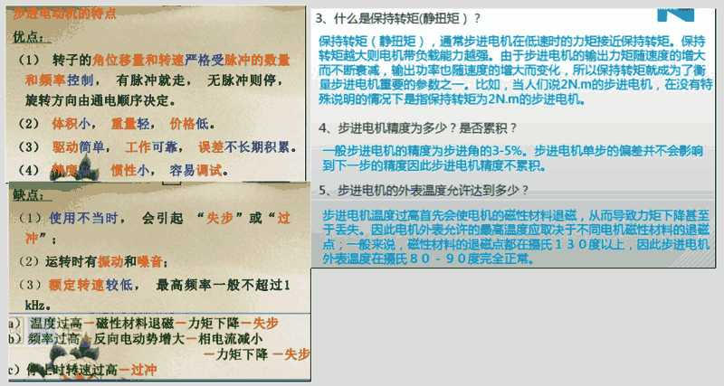

(1)步进电机没有积累误差：一般步进电机的精度为实际步距角的百分之三到五，且不累积。
(2)步进电机在工作时，脉冲信号按一定顺序轮流加到各相绕组上(由驱动器内的环形分配器控制绕组通断电的方式)。
(3)即使是同一台步进电机，在使用不同驱动方案时，其矩频特性也相差很大。
(4)步进电机与其它电动机不同，其标称额定电压和额定电流只是参考值;又因为步进电机是以脉冲方式供电，电源电压是其最高电压，而不是平均电压，所以，步进电机可以超出其额定值范围工作。但选择时不应偏离额定值太远。
(5)步进电机外表允许的最高温度：步进电机温度过高首先会使电机的磁性材料退磁，从而导致力矩下降乃至于失步，因此电机外表允许的最高温度应取决于不同电机磁性材料的退磁点;一般来讲，磁性材料的退磁点都在摄氏130度以上，有的甚至高达摄氏200度以上，所以步进电机外表温度在摄氏80-90度完全正常。
(6)步进电机的力矩会随转速的升高而下降：当步进电机转动时，电机各相绕组的电感将形成一个反向电动势;频率越高，反向电动势越大。在它的作用下，电机随频率(或速度)的增大而相电流减小，从而导致力矩下降。
(7)步进电机低速时可以正常运转，但若高于一定频率就无法启动，并伴有啸叫声。
区别1： 控制的方式不同
步进电机是通过控制脉冲的个数控制转动角度的，一个脉冲对应一个步距角。 伺服电机是通过控制脉冲时间的长短控制转动角度的。
区别2：所需的工作设备和工作流程不同
步进电机所需的供电电源（所需电压由驱动器参数给出），一个脉冲发生器（现在多半是用板块），一个步进电机，一个驱动器（驱动器设定步距角角度，如设定步距角为 0.45°，这时，给一个脉冲，电机走 0.45°）；其工作流程为步进电机工作一般需要两个脉冲：信号脉冲和方向脉冲。 伺服电机所需的供电电源是一个开关（继电器开关或继电器板卡），一个伺服电机；其工作流程就是一个电源连接开关，再连接伺服电机。
区别3 : 低频特性不同
步进电机在低速时易出现低频振动现象。振动频率与负载情况和驱动器性能有关，一般认为振动频率为电机空载起跳频率的一半。这种由步进电机的工作原理所决定的低频振动现象对于机器的正常运转非常不利。当步进电机工作在低速时，一般应采用阻尼技术来克服低频振动现象，比如在电机上加阻尼器，或驱动器上采用细分技术等。 交流伺服电机运转非常平稳，即使在低速时也不会出现振动现象。交流伺服系统具有共振抑制功能，可涵盖机械的刚性不足，并且系统内部具有频率解析机能（FFT），可检测出机械的共振点，便于系统调整。
区别4 ：矩频特性不同
步进电机的输出力矩随转速升高而下降，且在较高转速时会急剧下降，所以其最高工作转速一般在 300～600r/min。
交流伺服电机为恒力矩输出，即在其额定转速（一般为 2000 或 3000 r/min）以内，都能输出额定转矩，在额定转速以上为恒功率输出。
区别5： 过载能力不同
步进电机一般不具有过载能力。
交流伺服电机具有较强的过载能力。 以松下交流伺服系统为例，它具有速度过载和转矩过载能力。其最大转矩为额转矩的 3倍，可用于克服惯性负载在启动瞬间的惯性力矩。 （步进电机因为没有这种过载能力，在选型时为了克服这种惯性力矩，往往需要选取较大转 矩的电机，而机器在正常工作期间又不需要那么大的转矩，便出现了力矩浪费的现象）
区别6： 速度响应性能不同
步进电机从静止加速到工作转速（一般为每分钟几百转）需要 200～400ms。 交流伺服系统的加速性能较好，以松下MSMA400W 交流伺服电机为例，从静止加速到其额定转速 3000 r/min。仅需几 ms，可用于要求快速启停的控制场合。
说白了，极对数多，转速慢，控制角度的，动力线引脚多的都是步进电机，而且功率往往比较低。而精度高，速度快，可应用于速度，位置，力矩多场合控制的，动力线都是UVW三线，通常都是伺服电机。而且通常极对数不超过5级，功率从几十瓦到几十千瓦都有。

进电动机的特点
优点：
(1)
和频率控制，
3、什么是保持转矩(静扭矩)?
保持转矩(静扭矩)，通常步进电机在低速时的力矩接近保持转矩，保持
转矩越大则电机带负载能力越强，由于步进电机的输出力矩随速度的增大
而不断衰减，输出功率也随速度的增大而变化，所以保持转矩就成为了衡
量步进电机重要的参数之一，比如，当人们说2N.m的步进电机，在没有特
殊说明的情况下是指保持转矩为2N.m的步进电机，
4、步进电机精度为多少?是否累积?
一般步进电机的精度为步进角的3-5%.步进电机单步的偏差并不会影响
到下一步的精度因此步进电机精度不累积。
5.步进电机的外表温度允许达到多少?
步进电机温度过高首先会使电机的磁性材料退，从而导致力矩下降甚至
于丢失。因此电机外表允许的最高温度应取决于不同电机磁性材料的退磁
点：一般来说，磁性材料的退磁点都在摄氏130度以上，因此步进电机
外表温度在摄氏80-90度完全正常。
转子的角位移量和转速严格受脉冲的数量
上时转速过高一过冲
有脉冲就走，
无脉冲则停，
误差不长期积累。
一力矩下降一失步
旋转方向由通电顺序决定。
(2)体积小，重量轻，
(3)驱动简单，工作可靠，
(4)惯性小，
缺点：
(1)使用不当时，
冲”；
(2)运转时有振动和噪音：
(3)额定转速较低，
kHz.
价格低.
容易调试。
会引起“失步”或“过
最高频率一般不超过1
温度过高一磁性材料退磁一力矩下降一失步
b)频率过商反向电动势增大-相电流减小
运转量与冲数的比例关系
运转速度与脉冲速度的比例关系